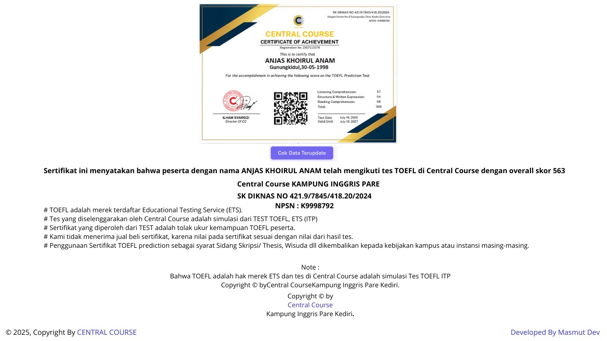

Sertifikat ini menyatakan bahwa peserta dengan nama ANJAS KHOIRUL ANAM telah mengikuti tes TOEFL di Central Course dengan overall skor 563
Central Course KAMPUNG INGGRIS PARE
SK DIKNAS NO 421.9/7845/418.20/2024
NPSN : K9998792
- TOEFL adalah merek terdaftar Educational Testing Service (ETS).
- Tes yang diselenggarakan oleh Central Course adalah simulasi dari TEST TOEFL, ETS (ITP).
- Sertifikat yang diperoleh dari TEST adalah tolak ukur kemampuan TOEFL peserta.
- Kami tidak menerima jual beli sertifikat, karena nilai pada sertifikat sesuai dengan nilai dari hasil tes.
- Penggunaan Sertifikat TOEFL prediction sebagai syarat Sidang Skripsi/ Thesis, Wisuda dll dikembalikan kepada kebijakan kampus atau instansi masing-masing.
Note :
Bahwa TOEFL adalah hak merek ETS dan tes di Central Course adalah simulasi Tes TOEFL ITP
Copyright © byCentral CourseKampung Inggris Pare Kediri.